Windows xp, OpenOffice, create pdf form for free, with save option
Start with a new document in OpenOffice, then display form controls:
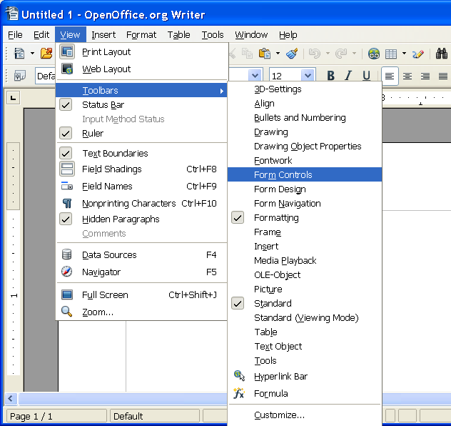
Enter some text. Press TAB key to get even spacing from text to edit box:
Click on text box. (Icon with ABC)
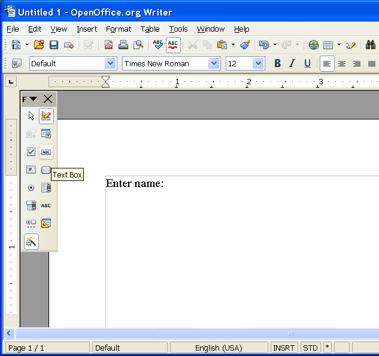
Press left mouse key and hold. Draw a box. Release left mouse key.
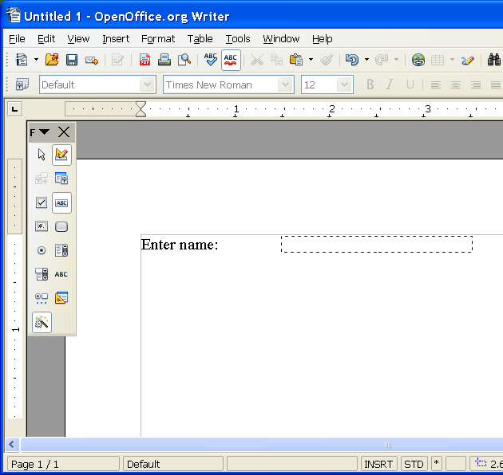
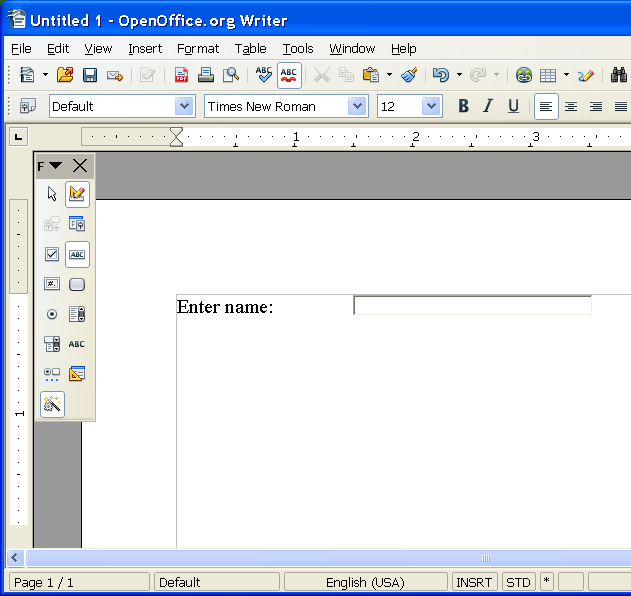
Another text. Another TAB key. Then click on Text box (ABC).
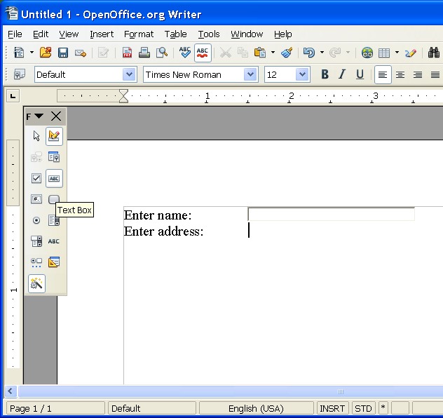
Draw a bigger box.
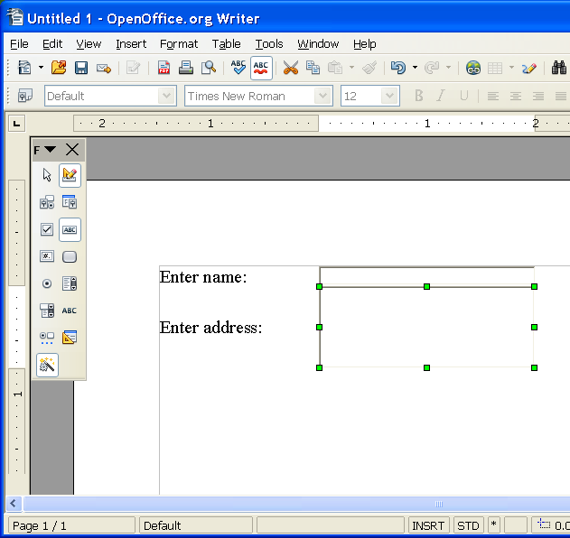
To enable multiline text in text box:
Right click on edit box, and select "Control"
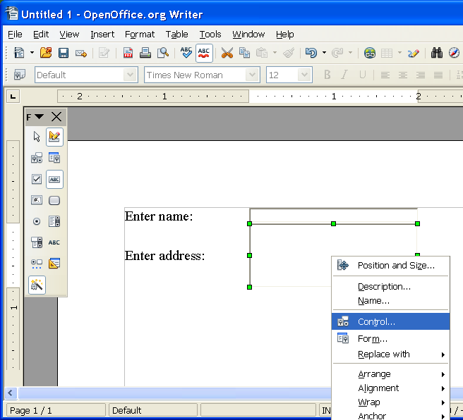
Scroll down options of the "Properties: Text Box.
Use the scroller on the right side of the window.
Move it down, till you get to the "Text type" label.
Set it to "Multi-line".
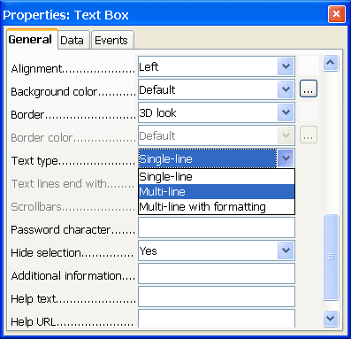
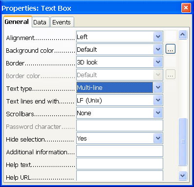
Click on red "x" to close window.
Finished. Now to export as a PDF file.
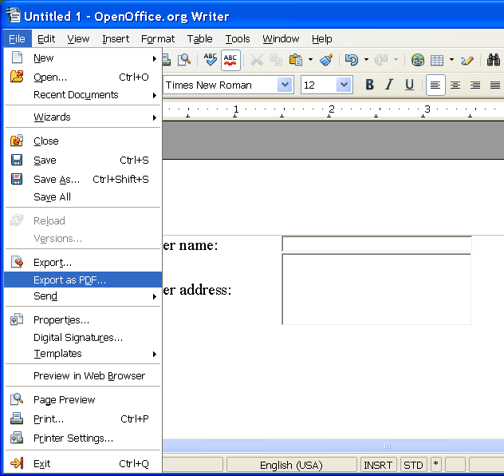
Make sure "Create PDF form" is checked.
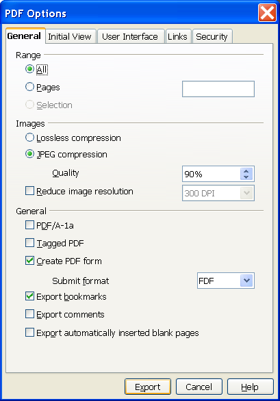
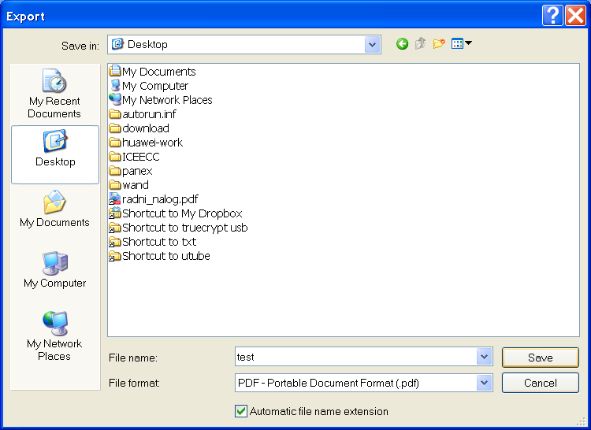
Use PDF-xchange-viewer or Foxit reader to fill out and save a form.
You can use Adobe Reader instead, but Adobe Reader cannot save form. (Tried with version 9.3.4)
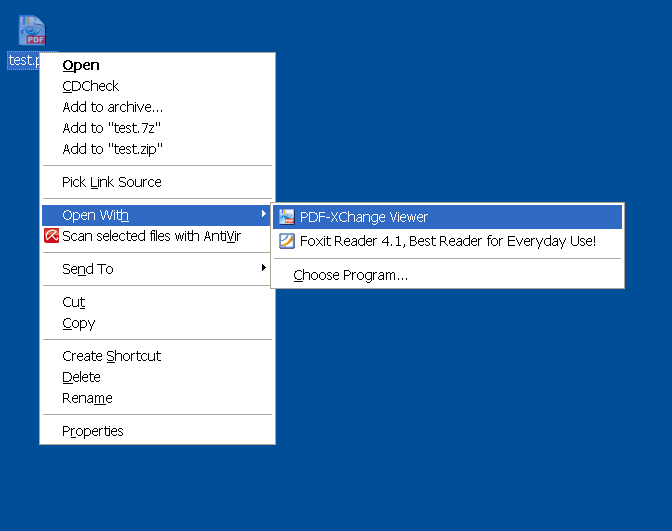
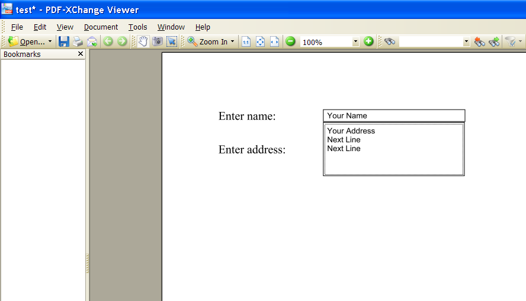
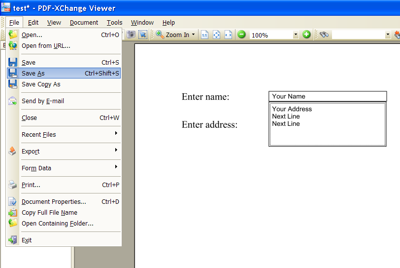
Print if you want.
Save under another name.
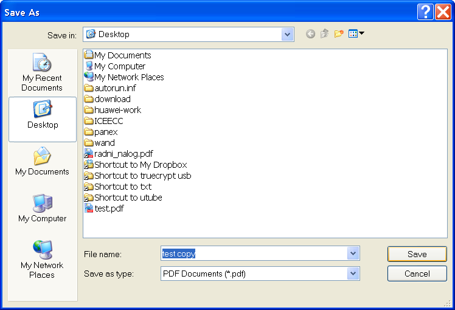
When you open copy, data is saved.
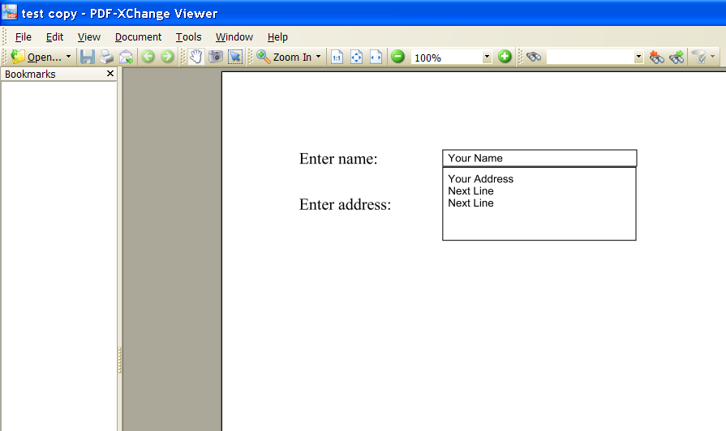
Example with a foxit reader
Example with a adobe reader does not work.
On Linux: Evince, Okular, KPDF ?
Online: http://www.pdfescape.com
Note:
You can use image as a background.
Scan an image, resize it to 1024xsomething using IrfanView, and set it as a background:
In openoffice: format/page/background/as a graphic. (area)
page/margins/, set all to 0
page/format/a4
If you do not want to print a background image, when printing, go to
file/print/options, uncheck "background". (This setting will not be saved.)